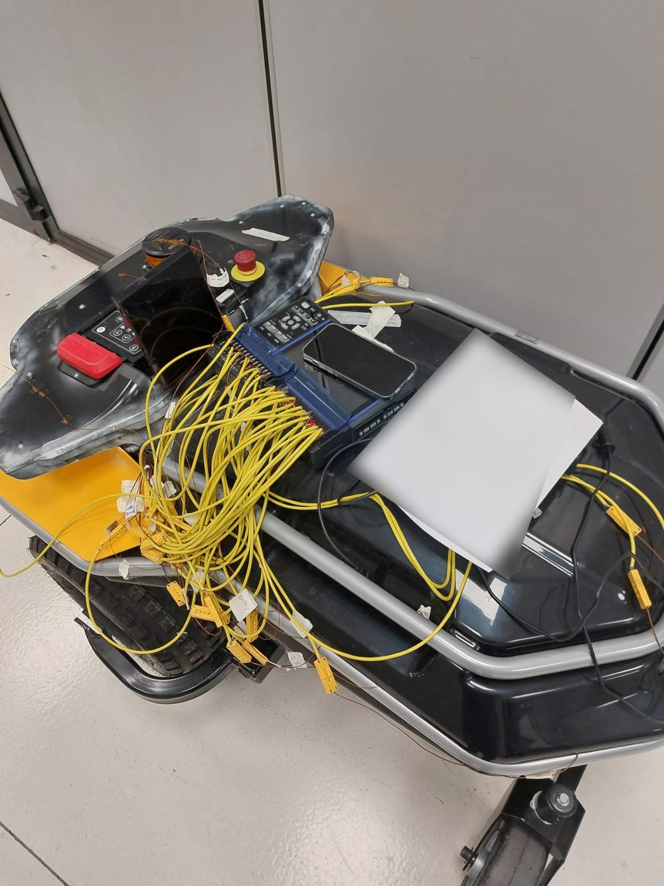
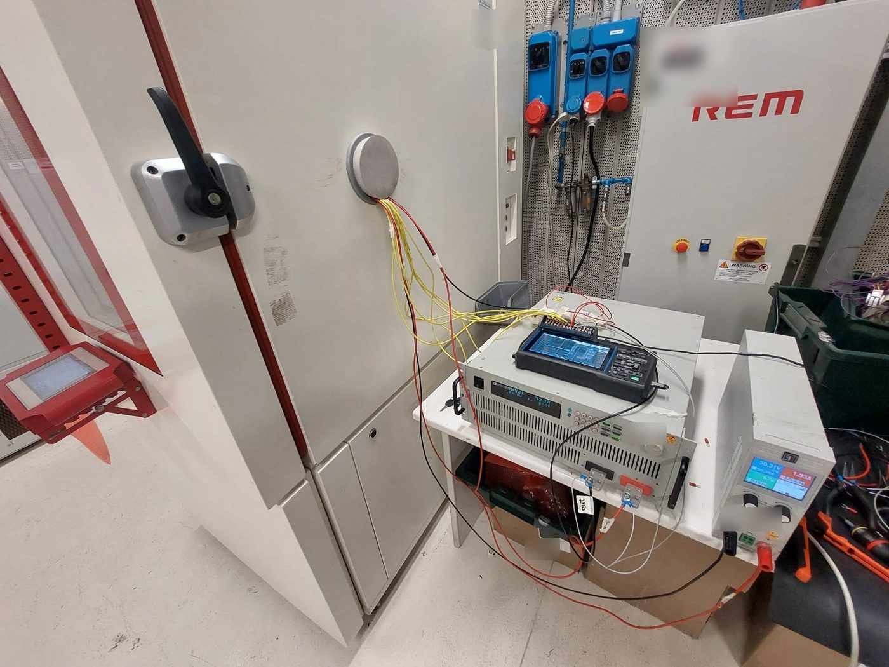

Apr 2025 – present
Italy
Italy
Control Systems Engineer, Robotics Testing & Validation
STIGA
- Analyse and validate closed-loop motor and vehicle-motion behaviour on autonomous electric platforms: speed tracking, torque response, braking and stability under changing load.
- Plan and run system-level test campaigns on control limits, fault handling and transient response, using real-time CAN-bus diagnostics to support firmware and control-strategy changes.
- Integrate and debug traction motors, motor controllers, LiDAR sensors and NVIDIA Jetson computers on prototypes.
- Run environmental stress tests from −20 °C to +70 °C in climatic chambers, instrumenting motor sockets, battery packs and logic enclosures with thermocouples to assess heat dissipation, mechanical stress and structural integrity.
- Characterise high-current DC-DC converters, cutting decks and drive assemblies with electronic loads and shunt resistors, measuring efficiency, power dissipation and duty-cycle limits under continuous operation.
- Handle mechanical bring-up of PP0/PP1 prototype chassis: install, align and validate sub-assemblies, cutting-height actuators and braking hardware.
- Built a Python desktop tool (PySide6, pandas, docxtpl) that turns data-logger and CAN-bus logs into finished, numbered Word test reports. See the project
- Lead 350+ hour endurance campaigns tracking structural vibration, heat-sink performance and component wear under varying outdoor turf loads.

